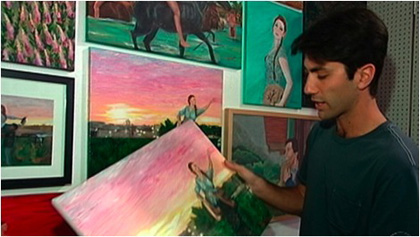
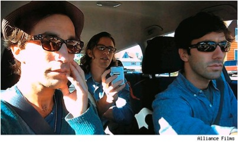

THEORY BEYOND THE CODES
At Play in the Cyber/Fields of Cultural Production, or:
How to Be a Stay-at-Home Mom and Earn Extra Symbolic Capital in your Spare Time
John Freeman
There is no 'place' for women in these networks, only geometries of difference
and contradiction crucial to women's cyborg identities. If we learn how to read
these webs of power and social life, we might learn new couplings, new coalitions.
--Donna Haraway [1]
I didn't have anything else in my life. It was just the only thing
I had going for me... I didn't have anything else to do...
--Angela Wesselman [2]
In her justly famous essay about a hypothetical "Shakespeare's sister," Virginia Woolf asserts that "any woman born with a great gift in the sixteenth century would certainly have gone crazed, shot herself, or ended her days in some lonely cottage outside the village, half witch, half wizard, feared and mocked at." Even if the "highly gifted girl" somehow managed to survive being "thwarted and hindered by other people," she would have found herself "so tortured and pulled asunder by her own contrary instincts, that she must have lost her health and sanity to a certainty." [3] Wearied and confined by household duties, with no room of her own, she would have sunken into anomie and anonymity -- and certainly a raft of unacknowledged women suffered just that fate.
Almost a century later, cyberfeminists such as Donna Haraway have championed the Internet as a domain that offers a refuge for women from restrictive gender boundaries and patriarchal dominance. Others, such as "technofeminist" Judy Wajcman, argue for a more nuanced stance towards the Web as a realm of utopian liberation. She finds, for example, that in the "travel narrative" often employed to describe the information superhighway, it is the men "who take to the road... to find themselves," while the women "keep the home fires burning as they did in the physically proximate communities that virtual networks are held to have replaced." [4] Rather than focus on the Web as a utopian "nowhere," she encourages cultural critics to take a more pragmatic approach by focusing more on how it functions in the "now here." In her own technofeminist approach, Wajcman maintains, along with Pierre Bourdieu, that "knowledge is situated, and theories come to life and have meaning only in specific local contexts of practical activity." Thus, she seeks to temper cyberfeminists' utopian approach to the Web with "a constructivist theory of technology." [5] While it is true that, in the postmodern era, "All the Web's a stage," offering "a multiplicity of innovative subjectivities" and the possibility of disrupting the dominant patriarchal ideology, Wajcman reminds her readers at several points that "technology is always a socio-material product," and therefore "both a source and a consequence of gender relations." [6] Granted, Shakespeare's contemporary sister can lead a wireless existence, but does such virtuality necessarily guarantee that potentially new modes of experience and opportunity can allow her to break through the restrictions imposed by the dominant paradigm? Are "new couplings, new coalitions" possible?
There is perhaps no better contemporary allegory and test case for "wireless" sisterhood than what we find in the example of Angela Wesselman, the subject of the documentary Catfish, a controversial film that premiered at the Sundance Festival in 2010. [7] Here, a twenty-four year old New York-based photographer, Yaniv (Nev) Schulman, is sent a painting based on a photograph that he had published in the New York Sun. The painter is Abby Pierce, presented as an eight-year-old gifted child from Ishpeming, Michigan.
Soon, a relationship mediated by her mother (Wesselman) develops between the two, as more paintings based on Nev's photographs arrive by mail.

Nev examines Abby's artwork, an embarrassment of riches. Catfish. Directed by Nev Schulman, Ariel Schulman, and Henry Joost. Rogue Studios. 2010.
Nev learns from the mother that Abby has recently sold two paintings for $7000 and has opened a gallery downtown to showcase her work. About two months into the evolving friendship, Nev's brother Ariel ("Rel"), and his friend Henry Joost, both filmmakers, begin documenting the relationship.
Nev's friending of the family on Facebook soon expands to Abby's brother, Alex, and her talented and attractive nineteen year old half-sister, Megan Faccio (and some dozen others).
A romance quickly develops between Nev and Megan, with growing cybersexual overtones. Soap opera ones as well: when Nev fails to respond quickly enough to a song Megan has composed for him, her step-brother Alex chastises him and is in turn advised by his mother in a wall post that "You really need to stay out of it please." Over the course of nine months (and 1,500 posts and messages) Nev's relationship with what he refers to as "The Facebook Family" grows and deepens.
When a new song Megan has dedicated to him -- "All Downhill from Here" -- turns out to have been pirated from the Internet, Nev and his documentarian cohorts begin to be suspicious. Googling Abby's supposed gallery in downtown Ishpeming, they discover the building has been vacant for four years, further fueling their suspicions. They decide to travel to Michigan to unravel the mystery and find out the truth. Guided by their trusty GPS system -- a constant reminder of their faith in technology to help them find their way in the world -- they arrive at their destination. Negotiating his way through Angela's various subterfuges and cover stories, Nev finally arrives at the truth: Angela is the actual painter; Abby is not the precocious child she was made out to be; and Megan is a persona, one of many of Angela's alter egos who is based on a photograph that she "borrowed" from a complete stranger's Facebook profile.
A forty-something housewife, Angela is married to Vince Pierce, who has severely disabled twin sons from a previous marriage. In a tearful confession to Nev, Angela defends her actions by speaking of the sacrifices she had chosen to make in her life, observing that the various personae she had taken up in her correspondence with Nev are "fragments of things [she] used to be, wanted to be, never will be." Shakespeare's sister is found out. Case seemingly closed.
Angela unburdens her soul to Nev. Catfish. Directed by Nev Schulman, Ariel Schulman, and Henry Joost. Rogue Studios. 2010.
1. "Angela's Truth": "Warped Heroine" or Technofeminist Hacker?
I'll make the supermarket tabloids.
They'll write some awful stuff,
But the more they run my name down,
The more my price goes up!
---"Celebrity" (Brad Paisley) [8]
...it may be said that truth here reveals its fictive arrangement.
---Lacan [9]
As one might expect, responses to Catfish ranged widely. Interviewed by Anne Brodie, Rel Schulman noted that Morgan Spurlock, director of Supersize Me, "said to our producers [that] he loved the film. He thought it was the best fake documentary he'd ever seen." [10] Beyond doubting the authenticity of the documentary, others questioned the motives, ethics, and truthfulness of its producers. Still other respondents focused on Angela, some viewing her as a master of deception willing to go to any lengths to create an elaborate alternative reality based on a tissue of lies and misrepresentations. [11] Others pictured her more favorably as a frustrated housewife having bravely taken up the task of raising two severely disabled step-children, and yet as someone who found the time -- God knows when! -- to engage in an escapist fantasy that, Sybil-like, offered her the possibilities of starting over again, both as a child prodigy and as a multi-talented, much younger woman romantically involved with Nev. Following the latter line of thought, Allison Willmore sums her up thus:
It's seem strange to say that, given the insane extent of the fiction Angela created, she comes across as more complicated and captivating than the filmmakers do -- as, really, the warped heroine -- but it's true. She lied, but she also created insightfully flattering bait for a group of urbane New Yorkers. The film can be intensely uncomfortable to watch at moments, but [the] exploitative edge inherent to the idea of "let's go confront this crazy lady" is undone by the fact that Angela's truth puts it to shame. [12]
On the face of it, Angela seems to have mastered the medium of the Web in ways that would satisfy the technofeminist agenda laid out by Wajcman. From a historical perspective, this is no mean feat, as the long view of technological innovations reveals them to be targeted toward "the technically interested and entertainment-oriented male" consumer. Wajcman offers several cases in point: Designed for single men, the microwave found only a secondary, unintended use as a labor-saver for the overworked housewife. While technological innovations might result in lightening the workload, no progress was made in redistributing the labor. As Wajcman observes, "democracy in the kitchen is not part of the package." The "trickle down," merely secondary benefits of new technology for women are in evidence everywhere: "Designed by telegraph men for business purposes, the telephone was taken up by women for social functions." [13] Outside the home-front, women's involvement in these technologies reflects the overall disparity in wage and status generally found in the workplace. Thus, the image of female switchboard operators at the lower level of the communication industry is carried over today into a field wherein women occupy lower-echelon positions, while males predominate as systems analysts, programmers, and specialists in other higher-echelon positions.
What the current division of labor obscures, however, is how instrumental women have been in the early development of the cybernetic revolution, as well as how much cybernetics -- all appearances aside -- favors female modes of knowledge and procedure. As Sadie Plant proclaims, "[c]ybernetics is feminization." [14] Wendy Hui Kyong Chun and Alexander Galloway contend that women were the first "computers": that is, the early developers and implementers of software which, as it turns out, is itself a gendered term reflecting the fact that women "did not simply operate the machine [ENIAC], they helped shape it and make it functional." Chun notes the irony in Plant's restoration of the signal importance of early female programmers such as Grace Murray Hopper and Ada Lovelace. Plant's mid-nineties reclamation occurred just as "women 'coders' were almost definitively pushed out of the workplace." Nonetheless, Chun seconds Galloway's contention that protocol is "inherently anti-patriarchy," and that if hardware is Frankenstein, software is the daughter that supersedes him. [15] Not surprisingly, Galloway's own section on cyberfeminism in Protocol comes just after the section concerning computer viruses. As a form of "tactical media," cyberfeminism represents a new viral strain taking advantage of "the negative space created within protocol through the injection of mutations, crashes, and viral code." [16] In essence, Angela had managed to beat the tech-savvy Nev & Company at their own game. Angela, from this perspective, comes from a long line of female "programmers," not, though, as a facilitator but as one who disrupts "the normal functioning of the machine" (albeit a more genteel version of the cyber/liberationist women of the VNS Matrix explored by Galloway).
In the digital realm, Angela crossed over the divisions of labor and gender that Pierre Bourdieu identifies as separating "male space, with the place of assembly, the market, or the fields, and female space, the house and its garden, the retreats of haram." [17] Violating these boundaries allowed Angela to lead a kind of gravity-less identity as she was able to float above limits of gender, social status, and age, as well as those of place. Bourdieu's distinctions in these regards no longer seem to apply:
The opposition between the centrifugal, male orientation and the centripetal, female orientation, which, as we have seen, is the true principle of the organization of domestic space, is doubtless also the basis of the relationship of each of the sexes to their "psyche", that is, to their bodies and more precisely to their sexuality. [18]
Shakespeare's wireless sister, Angela manages to break out of a singular, homespun identity, spinning off as many identities as the fabled Sybil or Eve. She expands the range of dispositions available to her by overlaying on the social field her own Multi-User Dimension (MUD). Unlike most Role Playing Games (RPG's), in which players choose one avatar to assume, Angela's version is a true "multi-user" one; thus, her range of dispositions (modes of acting and thinking, mannerisms, tastes, and any number of other characteristics) results in a habitus, or feel for the game, that exceeds what is generally available to any given individual. Here, the switchboard operator working to connect others is reborn as a novelist/playwright of sorts, plugging in and connecting a cast of real and made-up characters to a complicated, Stranger Than Fiction plot scenario hosted on the Web. Writing under an assumed "pen name," Angela is a postmodern throwback to the nineteenth century, with its George Eliots and George Sands. [19]
This role is borne out by the Special Sections of the DVD accompanying the documentary, in which Nev is asked if he resents Angela's creating of "this living novel with Nev as the main character in it." [20] A true Shakespeare's sister, her imagination had "bodied forth... out of airy nothing" some fifteen or more characters. Cooked up in her Facebookery was a rival photographer, a jealous boyfriend, and a flirtatious teenage confidante, all baits on purpose laid to make the taker, Nev, "mad in pursuit." Her spun-off alter egos constituted a repertoire of possible selves, an assortment of "extras" created as the occasion demanded. Angela operated like a playwright, rounding out her cast of characters to suit whatever plot needs arose: In this regard, she explains, "I really created her [Megan] to make it more of an age appropriate conversation for [Nev]." Verisimilitude must also be achieved; thus, since "It's not normal for just one person to be on Facebook ...with just one friend," she created a convincing supporting cast. To overcome doubts that an eight-year old could be such an accomplished painter, she created a time-delayed series of images of Abby in the process of executing a portrait. Every suspicion on the part of the documentarians was anticipated and parried. Henry comments on her ability to elicit "audience involvement" in her masquerade: "Facebook is a medium for communication, but she figured out how to turn it into a medium for interactive storytelling." Rel goes even further: "She's like this fountain of creativity." [21]
Operating like a master hacker, Angela engaged in what Galloway and Eugene Thacker characterize as an "exploit": a viral intrusion into the interstices of various systems, "a resonant flaw designed to resist, threaten, and ultimately desert the dominant political diagram." [22] Film reviewer Simon Miraudo emphasizes just how much the documentary disorients and deconstructs: "If Inception had you jokingly wonder what is real and what is fake, Catfish will have you frantically scrambling around for totems to spin just to double check the veracity of the existence of yourself and the people around you." [23] The film itself, largely through Angela's machinations, constitutes what reviewer Clemba Stow labels "a stunning dismantling of Facebook and the society of the spectacle (thanks, Debord) that goes along with it." [24] Just how effectively Angela found out and exploited the resonant flaws implicit in the Facebook system is demonstrated in an exchange among Nev, Rel, and Henry. These three urbane, media-savvy, young New Yorkers strain their wits in piecing together the characters and plot of the "living novel" in which Nev himself had been unwittingly cast as a character. Their conversation in the car as they leave from their first physical encounter with Angela and her family is instructive in this regard. Representing what social network theorists label "betweenness centrality," Megan, they find, is both the viral agent and the key to unlocking the mystery, what lies behind the curtain:
Henry: You want to hear my theory? Megan in the pictures... Angela doesn't know that person.
Nev: No, right.
Henry: She just somehow found a trove of pictures of this girl who's like an amateur model... .
Nev: ...But she does have a nineteen-year-old daughter, or an older daughter -- Right?...
Henry: ...And she just found in these pictures this photo of another woman who kind of looks like her...
Rel: ...Who's not even a woman...who's just a girl. She just labeled her...
Henry: Look, let's just say, I could take all of your photos [to Nev] and all of your photos [to Rel] and... download them and make new profiles with totally different names and never make friends with people who knew you and just create a network of friends that are actually real-life friends but you don't know them.
Rel: I mean, there's a lot that doesn't explain, guys...
Nev: ...So where do you find those [pictures]?...
Henry: ...No, it doesn't explain...
Henry: Also, what I want to know is what about the rest of these people? What about Ryan Iverson and Tammy?
Rel: Like, picture Megan doesn't know Abby.
Nev: Right.
Nev: And the other kids don't.
Rel: Abby doesn't know Megan.
Henry: Then these other kids, they talk about Abby, too, right.
Nev: They all talk about Abby.
Rel: Then they don't know Abby. Their friend Megan doesn't know Abby.
Henry: Alex has got to be fake if Megan is fake.
Rel: They're all related to you through Megan. If there's no Megan, then they don't relate to you.
Nev: Right.
Rel: 'Cause she's not fooling them, too.
Nev: I mean, maybe she's---what about all these other people?
Rel: She's [Angela's] all of them.
Nev [Slow acknowledgment]: She could be all of them.
Rel: Right.
Clearly, Angela had found ways to exploit the "interstices" of the system, to implant therein a "resonant flaw" that allowed her to master it and to revel in a proliferation of identities. If Megan's software has put Nev's hardware into overdrive, it is because of Angela's superb and sophisticated coding skills. Behind Megan's cyber siren song is a master programmer.
As it turns out, the protocols that lie behind such interactive fantasies cut across some seemingly disparate fields. For example, in her essay, "Will the Real Body Please Stand Up?," Allucquère Rosanne Stone draws parallels between the methods of "the young turks" of virtual reality computer engineering and phone sex workers. Both groups create tokens that "are recognized as objects of desire" through a complex coding/decoding process:
Phone sex is the process of provoking, satisfying, constructing desire through a single mode of communication, the telephone. In the process, participants draw on a repertoire of cultural codes to construct a scenario that compresses large amounts of information into a very small space. The worker verbally codes for gesture, appearance, and proclivity, and expresses these as tokens, sometimes in no more than a word. The client uncompresses the tokens and constructs a dense, complex interactional image. In these interactions desire appears as a product of the tension between embodied reality and the emptiness of the token, in the forces that maintain the preexisting codes by which the token is constituted.
Stone finds these "young turks" are "preoccupied with the things with which post-pubescent men have always been preoccupied." Thus, the system they create is one that operates in accordance with "gendered, binary terms," the same set of protocols employed by those employed in the more salacious industry. According to Stone, new conditions prevail here: "warrantability is irrelevant, spectacle is plastic and negotiated, and desire no longer grounds itself in physicality." Advances in this technology, Stone predicts, will only further complicate the warrantability of such spectacles:
While high resolution images of the human body in cyberspace are years away, when they arrive they will take "computer crossdressing" even further. In this version of VR a man may be seen, and perhaps touched, as a woman and vice versa--or as anything else. There is talk of renting prepackaged body forms complete with voice and touch ... multiple personality as commodity fetish! [25]
Such a system is highly vulnerable to exploitation by someone who knows how it works and can employ its codes to advantage. Angela skillfully played upon Nev's post-pubescent preoccupations by exploiting the negative spaces within protocol and injecting viral agents into Facebook profiles, thereby taking advantage of flaws in the warrantability of those identities. She exercised her own brand of "sourcery," particularly in reading Nev's capta (selective personal data) and programming Megan to execute routines based upon that information. In her own reprogramming of herself, she bears out the truth of Haraway's assertion that "Any objects or persons can be reasonably thought of in terms of disassembly and reassembly; no 'natural' architectures constrain system design." Where the early female programmers worked in behalf of their patriarchal masters, Angela's own program follows the dictates of Haraway's manifesto: "It is the self feminists must code." [26] Unrestricted by boundaries of age or gender, Angela's conjurations demonstrated remarkable powers of self-disassembly and self-reassembly.
The sorcery Angela practiced upon Nev extends to her husband, Vince, as well, whom we later find out was told by Angela that Nev was a New York exhibitor who had commissioned every piece of the artwork she had been sending him. In an exchange with Nev, Vince outlines his understanding of the arrangement:
Nev: What did she tell you about our relationship... with my photographs?
Vince: Well, you are her primary customer... primary. Ah, very happy with that relationship. Ah, in fact, in a sense very appreciative of what you have done for her. Because not only is she a good artist, but it takes somebody that appreciates the art... You know... I can drive downtown... down State... in Ann Arbor, and see starving artists all over with vanloads of their velvet-painted Elvises. And, you know, it ain't goin' nowhere...And I've told her this. You've been given an opportunity of a lifetime. Not many people have this.
Having escaped the fate of "starving artists," with their "velvet-painted Elvises," a stay-at-home mom living in Ishpeming, Michigan, managed to gain the attention and praise of a sophisticated, high-end professional photographer. Through what Bourdieu labels "the schemes of perception and appreciation which constitute a habitus," Angela managed to garner a certain amount of symbolic capital in Nev's eyes in her roles as the precocious child prodigy and the talented teenage singer and dancer. One might argue, however, that this "elevation" lasted only as long as the exploit went undetected, and that it was merely a Cinderella moment. Indeed, as Thomas Berman and his co-authors point out, our Cinderella did not even make it to the final celebratory ball: "When the documentary-thriller Catfish opened in New York City to enthusiastic crowds, the movie's star was at home in Ishpeming, Mich., probably doing laundry." [27]
Ironically, however, the documentary has garnered for Angela a certain amount of fame or notoriety (not much of a difference these days). We witness here a turn of events worthy of De Sica's After the Fox, in which Vanucci, a thief posing as a film director, enlists the aid of a small Italian town in stealing a gold shipment under the pretext that it is all a part of a movie which they were fortunate enough to have been cast in. Upon being caught in his deception, Vanucci finds his own amateurishly filmed production used in evidence against him. The plot twists once again, however. During the showing, a man stands up in the courtroom, identifies himself as a film critic, and declares Vanucci's work a "masterpiece." He is dragged out screaming his praise of Vanucci's genius. [28]
Life would seem to imitate art in this regard. Thus, in the discussion following Angela's 20/20 interview, Gail Garrett, a McKinney, Texas, folk art collector and exhibitor, predicts Angela's art works "will be selling for from @700 to $10,000 before the year is out, depending on size, and subject...and they will be selling before you know it. Her story is what we are all (as collectors) looking for!" Garrett places Angela in the distinguished company of a number of notable outsider artists:
Hello. I collect folk art, and this artist is EXACTLY what I look for ... to add to my collection. If you will remember back in the history of art ...many famous artists were interested in the world of the unknown mind, including going to study and collect the works of those artists living in mental institutions, and those who live in fictious worlds [sic] created in their own heads. There are many examples of this: Willie White, Alolph Wolfi, Purvis Young, Jimmy Lee Sudduth, William Hawkins, Anderson Johnson, S.L Jones, Sister Gertrude Morgan, Sam Doyle, and many others.
Praising Angela's "untrained eye" and her "PURE SPIRIT," Garrett's styling of her as "a Picasso in the making" is more than a bit extravagant; however, Angela's notoriety has given her access -- if not to the high end section of the Marketplace of Symbolic Capital -- at least to its commercial sector. "In fact," The Mining Journal of Marquette, Michigan, informs us, "Pierce's art ended up on display in a sold-out exhibit in New York City after the documentary made its debut. Also, she was commissioned to do paintings by people across the globe." [29] Angela acknowledges: "(After 'Catfish') I went from a nobody to someone with an extraordinary clientele." [30] In Bourdieu's conception, she has gained command over
the structure of the field, i.e. of the space of positions, [which] is nothing other than the structure of the distribution of the capital of specific properties which governs success in the field and the winning of the external or specific profits (such as literary prestige) which are at stake in the field. [31]
Angela's success in this regard also illustrates the interlocking nature of dispositions, and how the disposition and habitus of one agent can have surprising, unintended effects upon another. Debord's pronouncement concerning the risks of simulation must be modified somewhat here, as there are real advantages to be gained through such image play: "When the real world is transformed into mere images, mere images become real beings -- dynamic figments that provide the direct motivations for hypnotic behavior." [32] Like Spenser's Archimago, Angela created her own "dynamic figment," Megan, a figure alchemized from the Facebook profile of Aimee Gonzalez, "a 30-year-old photographer at Bella Divine Photography, a model and a mother of two." We are told "she [Aimee] was floored to discover her photos had been used in Megan's Facebook profile." Not only her identity, but also those of her husband and little sister "were stolen as part of Wesselman's charade." Again, like Archimago, Angela visited upon Nev a succubus in the form of Megan/Gonzalez (an act that in Puritan days would undoubtedly have led to her being hanged).
Oddly enough, even though Gonzalez as Megan only appears as images, a voice (Angela's), and texted communications in the documentary, Angela's "hijacking" and inhabiting of her identity have resulted in her image going viral over the internet. Already having garnered a certain amount of symbolic capital in her career as a model and professional photographer, Gonzalez has seen her stock rise exponentially as a result of her identity's being commandeered in Catfish:
For Gonzales, the experience has been strangely good. Traffic at her photography website is up more than 600 percent, she says. She was paid to participate in the movie. And if it leads to breaks in her career as a model and photographer, she won't complain. "Movies are a huge part of my life," she once wrote on her Facebook page -- yes, THAT Facebook page. "I relate a lot of my life's stories to them." Now more than ever. [33]
In a surprising reversal of order (and fortune), the movie version has overtaken and supplanted the life story.
Although Gonzalez received an apology from Angela, she has refused to respond. Nonetheless, she has profited since the film's debut from the symbolic -- and real -- capital generated from her featured role in this Simone-like production. Wesselman insists that she "should be grateful for her moment in the spotlight":
"It sounds weird to say, but it's given her an opportunity she wouldn't have had before," Wesselman said. "She's doing the things that I wanted to do, the things I can't do. I can't go to New York, I couldn't go to Sundance. ... I can't be that person ... and she is ... so I guess it's sort of that jealousy and it's not her fault." [34]
While she acknowledges that she "can't be that person," the writer of this "living novel" seemingly overlooks the fact that this hybrid figure Gonzalez/Megan only came into being as her creation. Megan's recalibrated status in the social field is a product of Angela's disposition reflected through her in the courtship with Nev. Gonzalez's "life story" has been recast as the product of someone else's imagination. Like a twenty-first century Jane Austen, Angela sends many characters to the ball -- the documentarians among them -- where the attainment of symbolic capital is celebrated. The hypnotic effect that Angela induced in Nev -- and by extension in his documentarians -- has now been projected to a larger audience with the distribution of Catfish. Undeniably, she has functioned as the technofeminist wizard behind the curtain.
2. Normalization, or "All Downhill from Here"
Every position-taking is defined in relation to the space of possibles which is objectively realized as a problematic in the form of the actual or potential position-takings corresponding to the different positions; and it receives its distinctive value from its negative relationship with the coexistent position-takings to which it is objectively related and which determine it by delimiting it.
---Bourdieu [35]
"Oh, my god -- They are complete psychopaths!"
---Nev
There is a little of all of us in Sybil, and a little of Sybil in us!
---Dr. Flora Schreiber [36]
By any measure, Angela has displayed herself as a virtuosa of the Web, occupying more of the "space of possibles" or "potential position-takings" than even Bourdieu might imagine. Whether or not she has managed to escape the external constraints of the social field that work to delimit these position-takings is a far more problematic proposition. For Bourdieu, no matter what relative degree of freedom agents may seem to exercise within the social field, they are constrained by their particular dispositions to acknowledge, legitimate, and even reproduce the social forms of domination that determine and "delimit" them. In discussing the spectacle, Debord finds similar limitations:
Understood in its totality, the spectacle is both the result and the goal of the dominant mode of production. It is not a mere decoration added to the real world. It is the very heart of this real society's unreality...the spectacle represents the dominant model of life. It is the omnipresent affirmation of the choices that have already been made in the sphere of production and in the consumption implied by that production. [37]
On the face of it, Angela seems to have avoided such determinism in fashioning a "spectacular" set of identities for herself. Indeed, the interview accompanying the documentary gives viewers a sort of Hollywood ending to take away from the film, seemingly allowing Angela as well as Nev & Company to emerge with something new and valuable from the tangled relationships of the past nine months. Asked by one questioner if an experience that did not kill them made them stronger, Rel notes that the lesson he drew from the film was that it did make them stronger; it taught them "What it means to be alive." Joost chimes in: "People who you think are negative people in life at one point turn out to be positive people. They keep you on your toes." Angela's husband Vince, in a most touching vignette, supplies both the title of the film as well as an allegorical framework for interpreting it:
They used to tank cod from Alaska all the way to China. They'd keep them in vats in the ship. By the time the codfish reached China, the flesh was mush and tasteless. So this guy came up with the idea that if you put these cods in these big vats and put some catfish in with them... the catfish will keep the cod agile. And there are those people who are catfish in life and they keep you on your toes. They keep you guessing. They keep you thinking. They keep you fresh. And I thank God for the catfish because we'd be droll, boring and dull if we didn't have somebody nipping at our fin.
For Vince, Angela is the catfish. She keeps things fresh and alive. Case closed, or so it would seem.
Vince and the documentarians' take on the affair is problematic on a number of levels, however. Following up on events that occurred after the documentary's opening at the Sundance Festival, we find that a normalization process went into effect once Angela's role as a "warped heroine" was discovered. The 20/20 interview of Angela, for example, comes across as the equivalent of a "show trial" in which the subject is led to confess the error of her ways and repent. [38] Thus, we find Vince backing away from his "catfish" comments, as Angela tells us: "A manipulator is what my husband calls me." She proceeds to agree with his assessment: "But yeah, I manipulate and it's not right. ... I never thought I'd become so entangled in it." She backs off from her former reveling in identity play as she falls prey to the predictable labels that would serve to constrain and delimit such play under the rubric of disease: "I have been diagnosed as schizophrenic," she said, "[b]ut ... I don't think I have multiple personalities in normal life, really. I just think I have the ability to create a lot of illusions for people."
Like Shakespeare's sister, trying to construct an identity and role outside of accepted social parameters, Angela finds herself "so tortured and pulled asunder by her own contrary instincts, that she must have lost her health and sanity to a certainty." Indeed, she admits to trying to kill herself (selves?) "as a way out." We might observe here that even Garrett's valuation of her artwork hinges at least partially on what such work reveals about "the unknown mind" and "the works of those artists living in mental institutions, and those who live in fictious worlds [sic] created in their own heads." The "normalization" of her activity as symptomatic of disease is designed to prevent her from breaking out of the socially prescribed space of possible position-takings afforded to members of society -- for Bourdieu and Debord, an impossible escape. Angela's blatant misdiagnosis as schizophrenic -- employing the popular misconception of schizophrenics as possessed of multiple personalities -- restricts and delimits her behavior within a socially prescribed definition of and label for abnormal behavior. No longer the innovative author of a new genre, the "living novel," she must be cured of dangerous delusions.
In many respects, Angela's trajectory here bears comparison with those of other famous "multiples" such as Eve and Sybil. Eve, of The Three Faces of Eve fame, illustrates the protocol for control mechanisms invoked in a pre-feminist era in dealing with such cases. Describing the cultural context from which this best-seller arose, Debbie Nathan attributes its popularity to post-World War II anxieties lingering in the American psyche:
Those multiple faces, after all, symbolized the biggest dilemma faced by American women in the 1950s. Expelled from the workplace after World War II ended, they'd been pressured to settle in at home as docile housewives and mothers. Passively accepting this new domesticity recalled the joylessness of Eve White, while feeling dissatisfied and rebellious suggested the immaturity and immorality of Eve Black. Psychotherapy could integrate these conflicts, the new book suggested. It could turn a distressed woman -- a split-personality woman -- into a contented, responsible Jane. [39]
The protocol calling for "normalization," turning Eve into a Plain Jane, also operates in Catfish, and is particularly evident in the last few scenes of the documentary, with Angela displayed, not as a painter, but consigned to the role of a housewife dutifully doing her vacuuming; Nev, although he appears disconsolate, is shown walking down a New York avenue on his way to his atelier. Both images confirm Bourdieu's centripetal/centrifugal binary involving female/male spatial categories. The documentary at least seems to put both of its principals in their place.
The other famous case documenting a "multiple" and following on the high heels of Eve -- Sybil -- offers a more complicated scenario for how cultural protocols are invoked to deal with such identities. Writing in the Washington Post, Sonya Rudikoff attributes Sybil's status as a "hit" to her multiple personality disorder, which
mirrored the contemporary stereotypes that people often apply to themselves: The poorly assimilated psychological and sociological notions of the day have led many to think of themselves not as persons but as disparate assemblages of roles, without any reigning self. [40]
Writen in 1973, prior to the full-blown post-structuralist dismantling of the "reigning self," Rudikoff's description of individuals' self-conceptions as "disparate assemblages of roles" is a prescient (if only accidental) anticipation of the postmodern situation. Like her namesake, Virgil's "mad prophetic Sibyl" of Cumae, who lived in a cave and had a hundred mouths, each with a distinctive voice, the modern Sybil figure seems to have spoken, if only in "scatter'd verse," to what Nathan describes as her own "fractured moment in history, when women pushed to go forward, even as the culture pulled back in fear." For women of the time, Sybil spoke "our idiom of distress."
What Rudikoff viewed as a misdiagnosis, Gloria Steinem employed as a Ms-diagnosis in Revolution Within: A Book of Self-Esteem. Here, as Nathan notes, she "lauded multiple personalities as a gift." [41] After all, "Sibyl" translates to "prophetess." Steinem ponders "what would happen if the rest of us could acquire for positive reasons the abilities these accidental prophets have learned for negative reasons." [42] Different alters in the liberated person could achieve accomplishments in music or languages unattainable by the host self. "Searching for a sense of integration," Nathan observes, "women took up multiple personality disorder as a metaphor, thanks entirely to Sybil." [43] Fan mail addressed to Dr. Wilbur, Sybil's therapist, gushed about the liberating effects of the condition; for example, Ellen from northern Virginia asserted: "reading Sybil had made her realize she didn't have to be 'just one person at a time for all my life.'" [44]
Unfortunately, in real life, the protocols that went into the making and subsequent unmaking of Sybil far exceeded in harshness those employed against Eve and Angela. In Sybil Exposed, Nathan offers a scathing critique of the highly unethical practices of Dr. Connie Wilbur, who "treated" Sybil (Shirley Moss) by employing hypnosis and mind-altering drugs, not so much to summon forth as to fabricate her so-called alternate identities. The plot becomes even more devious when Wilbur engaged a pop-psychology writer, Dr. Flora Schreiber, to further remake Sybil's experience, this time into a marketable bestseller. Obvious inconsistencies about her supposed abuse as a child as well as the validity of her multiples were ignored, including her written confession to Dr. Wilbur that she had made up the multiples, and had merely posed as Sixteen Characters in Search of a Therapist in an effort to win the favor and keep the attention of a psychiatrist whom she was, by then, affectionately addressing as "Mom." New alters were created for the book, since the mostly child-aged alters Sybil revealed in therapy would not have made as riveting a cast of characters as those displayed in Eve. Other damning evidence is presented. For example, Schreiber informed Wilbur that she would have to hold off writing the biography "because a book about a woman with multiple personality disorder would never sell unless it had a happy ending." No Hollywood ending, no book. Sybil must be rendered civil. Not missing a beat, "Connie guaranteed a happy ending sometime in the future." [45] Having already accepted and mostly spent a sizeable advance for the book, she would bring to a close a "cure" decades in the making. For both the psychiatrist and biographer, it might be noted, money was less a motivating factor than was the need for recognition. Like many women of the period, they had suffered the ravages of on-again, off-again careers, setbacks resulting in an increased drive to prove themselves professionally. Dr. Wilbur, in particular, had been cautioned about the dangers of unacknowledged "grandiosity strivings" influencing her research conduct, methods, and findings -- advice she failed to heed.
If "grandiosity strivings" contributed to the making of Sybil as a case that would establish her therapist as a ground-breaking figure in psychiatry, so Sybil's unmaking or restoration to wholeness would derive from similar questionable motives. [46] In the latter case, the ultimate merging of her identities might have owed a good deal more to marketing than to therapeutic mechanisms. To this end, Nathan describes finding a contract signed by the writer, therapist, and patient in Schreiber's archives at John Jay College. It outlines a fledgling enterprise they were contemplating at the height of Sybil-mania:
They named it Sybil Incorporated, and the contract they signed designated a three-way split of all profits and spin-offs from their book, including Sybil movies, Sybil board games, Sybil tee shirts, Sybil dolls, and a Sybil musical. [47]
Besides constituting an odd reversal of Mitt Romney's "Corporations are people, too, my friend," Shirley Mason's incorporation-as-cure demonstrates just how powerful market forces can be in determining the nature and meaning of individuals' lived experience. Angela's own experience may soon be refunded into an MTV reality show featuring a New York photographer who recreates Nev's own quixotic Facebook experience. [48] Notice that the focus here is on Nev, not on Angela. No doubt her reality TV double will be subjected to the same hetero-normative protocols applied to Eve, Sybil, and other such "schizophrenics."
While the "space of possibles" afforded to a Sybil and particularly an Eve was delimited by the cultural moment in which they lived, Angela would seem to profit from contemporary approaches to "schizophrenia." If we follow Gilles Deleuze and Félix Guattari's line of thought, which labels not the schizophrenic but the schizophrenic process as offering "the potential for revolution," we can view Angela's operations as those of a desiring-machine, in which "Desire constantly couples continuous flows and partial objects that are by nature fragmentary and fragmented." [49] Organs without bodies, partial objects through which desire flows, Angela's various manifestations/flows of alter-nating-egos and potentialities create what Slavoj Žižek labels a body "that thrives in the multitudes of its modalities" (interestingly enough, Sybil herself would poke fun at her "modalities" by playfully signing "Shirley, Inc." to greeting cards addressed to Dr. Wilbur). [50]
Opposed to this vitalism, Nev & Associates try to restrict these flows by damming them up in a singular self ("She's all of them") or, worse yet, in Deleuze and Guattari's formulation, reducing "all desire to a familial determination," attempting to place Angela under a psychic "house arrest." [51] Fascistic, their efforts to normalize her behavior are, in effect, measures to master and control her.
This normalization process attempts to override what Nancy K. Baym claims has become increasingly apparent about the postmodern condition:
Identity scholars such as Goffman (1959) have long argued that the self plays multiple roles in everyday life and cannot be understood adequately as a single unified entity. Rather than there being One True Self, variations of which are inherently false, contemporary scholars have come to see the self as flexible and multiple, taking different incarnations in different situations. [52]
Baym discusses how the "disembodied identities presented online can also be multiple. On last.fm, for instance, I am Popgurl, a self-representation I took great pains to keep separate from Nancy Baym." She uses her cat's name in the fan board. These identities are, of course, under and below her academic persona, which must be discreetly compartmentalized and kept separate from them: "All of these are genuine parts of me, but online they are segmented into separate spaces where they can become distinct identities." [53]
What's fair play for an academic, however, does not seem to work for a housewife, an indication that there is a status differential at work here. In popular culture venues such as 20/20, figures such as Angela must be chastised and pressured to conform. As Wajcman argues, what they represent threatens the order of things: "Complex virtual identities rupture the cultural belief that there is a single self in a single body." [54] In Angela's cases, the rupture must be repaired, the One True Self reunified and made whole. As an Eve or a Sybil, she must be psychologized and domesticated, Pandora's demonized, scattered selves put back in the box. Interesting enough, one early use of the documentary genre involved the investigation and, in some instances, the cure of such "pathologies"; for example, in 1899, the Romanian neurologist Gheorghe Marinescu filmed a documentary entitled A case of hysteric hemiplegy healed through hypnosis. [55] Women, it would seem, were easy prey for such experimental procedures, social control masquerading under the respectable rubric of "therapy."
Such packaging or normalization is not easily achieved, particularly since it violates a key assumption of the postmodern condition. Thus, so powerful were the subsets of identities Angela formed that the effects of this online "novel" did not immediately dissipate. Even upon meeting Angela in the flesh, Nev experienced a persistent doppelganger effect that made it difficult for him to separate out the "real" from the "fictional." The "organs" with which he had dealt with during those last nine months persistently resisted being embodied, or reconstituted into a singular personality. Indeed, Nev acknowledges that none of Angela's characters or variations on herself turned out to be "inherently false":
But again people sort of forget that I wasn't meeting the woman who had lied to me and deceived me and led me down this dark, twisted, nine-month relationship. I was meeting a woman I had never met before. She happened to be this creative, strangely deceitful woman who made all these characters but the characters were their own people. They were real to me still. And it was too fresh to really understand that these people didn't really exist. They were still real people and I still talk about them. And Angela was a new real person.
Oddly enough, as Rel points out, there was "sort of an old-friend chemistry" between Nev and Angela during their four-day stay in Ishpeming, as Nev attempted to sort out what had become a very tangled set of relationships. Rel observes that it was "as if you guys had reunited but had never met, which was weird because you actually did know her very well, but through the guise of all these characters and, like you said, she is all these characters." Nev immediately recognizes the truth of this:
Yeah, and it kind of became clear that all these characters she created were pieces of her, and I immediately sympathized with her and sort of subconsciously understood that what she was doing was in a sense what I was doing, 'cept she was on one side of it and I was on the other. We were both sort of looking for a connection and had found one with each other. And the romantic side, the friendship side, the creative artistic collaboration side, those were all real to me and still are.
In an interview, we are informed that, "[a]fter the cameras stopped rolling and the truth came out, Wesselman said she continued to send Schulman e-mails attached to fake identities." She confesses: "In my mind there were days where I actually believed that Megan existed... I immersed myself into thinking that somewhere she's there." [56] Nev himself, in the interview, refers a number of times to Abby rather than her mother as the painter.
In her dealings with netizens, Margaret Wertheim notes that some of them find their "cyber-selves so 'real' they question the privileged position of the physical self." She reminds her readers that, while avatars can be re-booted, real selves cannot: real selves can get sick and die. She acknowledges that people can remake themselves online; however, such online "'remaking' obscures the very significant difficulties of achieving real psychological change." She disagrees with Turkle's contention that life in the flesh is just another "window":
The self is no longer simply playing different roles in different settings at different times. The life practice of windows is that of a decentered self that exists in many worlds, that plays many roles at the same time. Now the embodied self, as one of Turkle's interviewees put it, may be "just one more window."
Cyberspace, in Wertheim's estimation, does not hold the prospect of multiple selves; rather, "it encourages a more fluid and expansive vision of one self." [57] Deleuze and Guattari would no doubt resist her psychologizing and boxing in of the self. They would agree with her that the Internet reminds us that "we are all bound into a web of interrelating and fluid selves," but they would likely describe Turkle's window as a portal through which desire should freely flow. They praise D. H. Lawrence's pantheism and de-oedipalizing of nature, as in the following passage:
A woman is not a 'model' anything. She is not even a distinct and definite personality... .A woman is a strange soft vibration on the air, going forth unknown and unconscious, and seeking a vibration of response. Or else she is discordant, jarring, painful vibration, going forth and hurting everyone within range. And a man is the same. [58]
Wajcman describes the Web as "the ideal feminine medium where women should feel at home," [excelling] "within [its] fluid systems and processes." [59] Indeed, the Web is the perfect medium for desiring-machines.
As one might expect, efforts are constantly afoot to restrict these fluid systems and processes, particularly when they concern matters of female identity. Jodi Dean's characterization of the Net as cyberia, "awash in a sea of flows and links and networks," underscores how difficult it is to limit what one reviewer labels the Net's "hyper-subject, superuser," whose multiplicity plays true to the "incessant growth-time of capitalism, which requires constant (cultural) production." [60] While Facebook insists on users employing authentic names -- after all, only data tied to authentic user names are marketable -- its own exponential growth makes it a seedbed for alternate identities to sprout for a host of reasons: self-protection, identity play, spouses checking on the faithfulness of their partners, students hiding information from college recruiters, and various other subterfuges associated with homo ludens. Facebook's efforts to restrict its users' identities are reminiscent of Deleuze's characterization of societies of control, where regulation takes the form of a password and individuals become "'dividuals,' and masses, samples, data, markets or 'banks.'" Encouraging its users to adopt their Facebook identity as a "digital passport," Facebook operates in the same mode as the school, prison, hospital or other institutions of the control society by substituting "for the individual or numerical body the code of the 'dividual' material to be controlled" by the institution or corporation. [61] The so-called "nym wars" it conducts against multiple identity users involve issues of management and control. [62] Rhizomatic, with multiple exit and entry points and a non-hierarchical ordering, the Net offers challenges to those who would seek to order and control it. For Deleuze, the emerging society of control, so dependent on computers as enforcement mechanisms, is like the sovereign or disciplinary societies that preceded it: either liberating or enslaving. He advises: "There is no need for fear or hope, but only to look for new weapons." [63] "Weaponized" through her programming skills, Angela skillfully stage-manages the Web's numerous trap doors and tiring houses where alternate identities wait for their cues to appear.
For Nev, the Internet acts as "a leveling scale where reality and deception meet and new things sprout out of there." Although Angela comes across as a hybrid "sprout" rooted in the everyday but flowering in the virtual realm, her new-found liberation, a threat to the existing order, must be suppressed. Rather than being perceived as an exotic blossom, she will be plucked as a noisome weed. Diagnosed with "pseudonym-phomania," Angela has been forced to forsake the "fluid systems and processes" of her various identities; far from being "at home" on the Web, she has been placed under a form of house arrest, as we are informed that ,"[n]ow, her husband and friends monitor all of her e-mails and time online. She insists that she's not engaged in any fake online relationships." Having undergone months of counseling, and medicated (probably for life), she describes herself as "more stable" now, more focused "on making things right in the home."
3. A Separate Pseudo-World of their Own
Rel: She needs a wake-up call...We deserve to shake the truth out of her
...for Nev's sake.
"There is a game of puzzles," he [Dupin] resumed, "which is played upon a map."
--"The Purloined Letter" [64]
As we have seen with Bourdieu, every position-taking or disposition "receives its distinctive value from its negative relationship with the co-existent position takings to which it is objectively related and which determine it by delimiting it." [65] The filmmakers' focus on Angela's disposition and habitus obscures how their own co-existent dispositions seek to negate and delimit hers. For example, their self-presentation as victims of Angela's technofeminist machinations distracts the audience from their sophisticated use of technological devices in furthering their own particular rhetorical agenda.
Although the documentary seems to revolve around Nev & Company arriving in Ishpeming to call Angela's bluff, elements both within and external to the documentary itself portray a far more complicated scenario that ends up spinning out of their control. This occurs in spite of their offering of the documentary as a "travel narrative," a sort of Millennial Generation version of Kerouac's On the Road, with digital special effects and an array of cameras, hidden microphones, and other electronic devices by which they will track down, confront, and expose Angela (Here, the early documentary's function as a travelogue, a "scenic," also comes into play).

Rel, Henry, and Nev embark on a road-trip to "shake the truth out of Angela." Catfish. Directed by Nev Schulman, Ariel Schulman, and Henry Joost. Rogue Studios. 2010.
Investing total trust in their electronic gadgetry, our documentarians might be well advised to take into account the physicist's dictum: "Don't mistake the map for the terrain." As film critic Allison Willmore wisely observes:
The story's nicely broken up with Google Earth sequences in which we swoop from the Manhattan loft shared by Nev and the filmmakers down to Abby and Angela's address. It reinforces that it's become so easy to, say, zoom in on an image of someone's house, but not really know who lives there, or to learn about someone's innermost thoughts, but not have any actual idea of what that person's life is like.
In the documentary, moments in which we zoom in (from on high) on an image of Abby or the Ishpeming home are accompanied by the realization -- on the audience's part, at least -- that added resolution will not provide clarity but will only dissolve the image into the ones and zeros of a digitally arranged pointillist production à la Seurat.
In contrary fashion, Nev & Company fulfill Turkle's description of their generation "as more likely than their elders to take the screen world 'at interface value.'" So enchanted are these documentarians with technology that Catfish becomes populated by allegorized media personifications: "Some of the main characters in the film are computer applications," Joost says, "[l]ike Facebook, Gmail and Googlemaps, and YouTube and Google." The scrollover identifier is taken at (inter)face value. Like the MIT architect students Turkle describes, the documentarians fall into the illusion that what they see on the screen correlates point-by-point to some reality:
Students can look at the screen and work at it for a while without learning the topography of a site, without really getting it in their head as they would if they knew it in other ways, through traditional drawing for example...
For all their technological sophistication, our three questers reveal a curious ignorance of real-world topography. For example, they seem to think that their trip from New York to Vail, Colorado, puts them in closer proximity to Ishpeming, Michigan, resulting in their inviting Angela and her family to "drop by." More tellingly still, they fly from Vail to Chicago and then travel by rental car almost 400 miles to Ishpeming rather than taking a connector flight to nearby Marquette. Their lack of a real-world navigational sense reflects what Turkle describes as a deceptive divide that has opened up, irrevocably it would seem, between the simulation and the terrain: "These days, life scientists do not talk much about moving from physical models to computer screens -- that ship has sailed." [66] Debord warns us about the ersatz quality of experiencing and sensing that accompanies such overreliance:
The images detached from every aspect of life merge into a common stream in which the unity of that life can no longer be recovered. Fragmented views of reality regroup themselves into a new unity as a separate pseudo-world that can only be looked at. [67]
While Angela is portrayed as a Calypso or Circe who has cast a hypnotic spell over these screen-blinded characters, their documentary creates its own separate pseudo-world every bit as manipulative and fantastic as her own. Thus, to view Nev, Rel, and Henry as simply victims caught up in the spell cast by Angela's "living novel" overlooks their particular duplicity in the affair. Their own "novel" production, with its overlaying of hyperreal elements on an actual landscape, invokes the format and rhetorical strategies of cyberpunk fiction, a male-dominated genre which itself riffs on themes from the old-fashioned adventure novel. In "Mapping the Real," E. L. McCallum describes the similarities between the two genres:
an adventure is instigated to rescue someone who has been lost in the interior, in the uncharted territory. All of these cybernarratives feature a protagonist who must advance into the frontier -- that is, tap into an information network and get to an island -- to achieve the narrative aim of freeing someone (in Neuromancer and Mindplayers) or finding someone and saving the world from destruction (in Island and Snow Crash).
Lost in the interior -- Ishpeming -- Angela is the warped heroine who must be saved from herself. While some might find the self-involved Nev more than Angela in need of rescuing or saving, much of Catfish does involve tapping into and cracking "an information network" and, at least in Nev's own mind, freeing Angela from what he perceives as her pseudonymphomania. More importantly, the adventure novel/cyberpunk genre offers a framework very conducive to the filmmakers' self-serving agenda. McCallum observes that the typical cyberpunk narrative tends "to articulate conservative ways of seeing the world":
This entrenched view works on both ideological and narrative levels -- carving up the world according to differences of race and gender, and organizing its description according to a linear progression developed through cause and effect and depicted through a stable, discrete, often singular perspective.
This conservatism is played out in Catfish through the efforts of the various male figures to "normalize" Angela. They will give her "a wake-up call," restore her to hearth and home, and thereby eradicate this new genre of the "living novel." They will do so by imposing their own designs on a real-world setting. McCallum points out that real space "is a surprisingly important axis for the unfolding" of cybernarratives, despite such narratives' focus on "the non-spaces of computer-based networks." [68] Overlaying the map on the terrain, Nev & Company manage to create an enchanted landscape, a metaverse. For them, real space can be digitally altered. In this vein, Neda Ulaby observes: "The filmmakers even inserted digital elements into real-life scenes, superimposing GPS-like graphics onto the actual road as the characters drive around." [69] As Mary Pols notes,
The trio is guided by GPS and Google Maps and spurred on by images of places they recognize from Facebook; their journey is illustrated with jaunty blue arrows that yank us around Michigan. (You'd be hard-pressed to find a film that more closely approximates our computer-dependent existence.) [70]
In McCallum's estimation, such mash-ups of real and virtual elements in these works advance a more sinister program:
By representing the real alongside the virtual, cyberfictions construct an imaginary edge between cyberspace and real space; in so doing, they show their hand as narratives about control and access in several dimensions, gubernatorial as well as cybernetic. [71]
Film reviewer Sasha Stone criticizes the unidirectional nature of their digital allegory: "My main gripe with the film itself is that they don't turn the cameras back on themselves and reveal their own truths." [72] In the question-and-answer session of the documentary's bonus features, Nev at least admits that "we both used each other equally." Acknowledging his own complicity in being "totally suckered into" this deception, Nev sums up the relationship as "something I was kind of looking for and wanting and hoping for it to be real." Megan supplied for Nev a "farm fantasy," the idea of being outside and working with his hands; Nev supplied for Angela an urbane New York City lifestyle, fast-paced, and centered on art and culture. Film critic Roger More describes their interactions as "a game of Facebook Liar's Poker that amounts to a cautionary tale for the No Privacy generation." [73] The deck here is stacked, however; as respondent Alex-Bosnia notes of Nev and Angela, "they both are deceiving each other. The problem is that they only left Angela with the guilt." [74]
4. RETURN TO THIS ADDRESS FOR PROPER DISPOSITION.
We are dealing with a letter that has been diverted from its path.
--- "The Purloined Letter" [75]
The path of displacement of the signifier determines who we are, even more than native, social, or psychological factors.
---Lacan [76]
The male principals of Catfish show their own hand, their own controlling natures, in a telling scene the night before their first encounter with Angela and family. A few months prior to this encounter, Nev had sent Megan a postcard with a specially stamped penny attached to it. Like a true knight errant, he kept his own matching penny. Nev notes how strange this gesture feels to him as, up until this point, their interactions had occurred entirely in the virtual realm. This real world gesture provides what McCallum might identify as that imaginary edge between cyberspace and real space. Indeed, this gesture constitutes a (post)card trick of sorts -- a sleight of hand. Thus, when Nev & Company arrive at Megan's supposed horse farm, it not only turns out to be unoccupied, but they also discover in the mailbox the postcard Nev had sent her, undeliverable and marked: RETURN TO THIS ADDRESS FOR PROPER DISPOSITION.
Bearing tell-tale blacking-out marks not evident in the original scene when Nev mailed it, the postcard was obviously planted by the documentarians; indeed, the "PROPER DISPOSITION" stamp suggests that it would have been returned to the New York address. As one respondent notes, "they really screwed up when they planted the postcards in the mailbox with the 'return to...' stamp on them. Those postcards obviously already had been returned to Nev, which means he already knew Meg wasn't at the horse farm in Gladstone." [77] Tellingly, what would constitute the one true document in a documentary turns out to have been doctored, faked, its "proper disposition" called into question.
The question of proper dispositions, so much a part of Bourdieu's considerations, framed in a plot involving a "purloined" postcard, cannot be fully resolved without dealing both Jacques -- Lacan and Derrida -- into the game. Lacan's famous essay about Poe's "The Purloined Letter" is particularly relevant here, as our three "detectives" unconsciously engage in the same repetition compulsion that drives the mechanism of Poe's story. As readers will recall, there, a letter potentially harmful to the Queen's reputation has been purloined by Minister D----. Charged with finding the letter, the Prefect and his police companions fail to do so after exhaustive searches of the Minister's apartment. The detective Dupin is enlisted to find the letter, which, as it turns out, is "hidden in plain sight," tied to a card rack and hanging from a ribbon. In spite of its altered condition, the letter is immediately recognized by Dupin as the one in question:
In scrutinizing the edges of the paper, I observed them to be more chafed than seemed necessary. They presented the broken appearance which is manifested when a stiff paper, having been once folded and pressed with a folder, is refolded in a reversed direction, in the same creases or edges which had formed the original fold. This discovery was sufficient. It was clear to me that the letter had been turned, as a glove, inside out, re-directed and re-sealed. [78]
In John P. Muller and William J. Richardson's analysis of the story, they identify the letter as the "shifting pivot around which a pattern of human relationships rotates." [79] Its contents unknown, it stands for the unconscious. The repetition compulsion is at work here: Dupin purloins or diverts the course of the letter, thereby repeating the Minister's initial act of thievery. He adds insult to injury by writing on the replacement letter, in a hand he knows the Minister will recognize, a telling literary allusion concerning revenge. Dupin thus takes the position of the Minister, with the Minister now in the place of the Queen. In both Lacan and Derrida's analyses, the diverted letter travels "along circuits of symbolic order" [80] or, as Derrida explains:
As the signifier has but one proper place, fundamentally there is but one place for the letter, and this place is occupied successively by all those who possess it. It must be recognized, then, that Dupin, once he has entered into the circuit, having identified with the minister in order to take back the letter from him and to put it back on its 'proper course,' can no longer depart from this course. He must go through it in its entirety. [81]
Examining Poe's story, Lacan comments on "the manner in which the subjects relay each other in their displacement during the intersubjective repetition." [82] Similarly, Nev's own "purloined" postcard becomes a shifting pivot among the principals involved. By rerouting the postcard, creating a detour, Nev both repeats Angela's own manipulations and takes her place in the relay. What Derrida identifies as the "circulation of desires and capital, of signifiers and letters" is mediated by the letter or, in Catfish, the postcard. [83] Having no fixed and "proper disposition" of its own, the postcard, like Poe's letter in its diversions, "governs...entries and roles," or, in Bourdieu's terminology, dispositions. [84] Derrida maintains that the postcard is "but a little message, fold (pli)... A relay in order to mark that there is never anything but relays." [85] Diverting the postcard creates a short-circuit of sorts, a "scripting" error that one respondent traces to the source code of the filmmakers' program: "Why would he [Nev] think about making this into a movie before he even knew Megan was a fake character? It is like start[ing] writing a story before you even have one." [86] By recirculating the postcard, Nev keeps the "circulation of desires and capital" in play, allowing him to continue in his role of questing knight, but, more importantly, also allowing the documentary to proceed; indeed, in Muller and Richardson's conception of "purloined," the postcard allows the documentary to be "pro-longed." [87]
Nev's "purloined" postcard exposes the documentarians' own manipulations and motives in shaping the story they present. Indeed, when we set Angela's homespun narrative in opposition to the "travel narrative" whose purpose is "to shake the truth out of her," the New Yorkers' narrative quickly begins to unravel. The issue here is not one involving whether or not the documentary is faked, its timeline altered or its scenes recreated. From a post-structuralist point of view, such disputations naively assume a highly questionable ability of any simulation to reflect some on-the-ground "reality." [88] The matter of authenticity is more interestingly considered as one involving positions taken by the various agents in their efforts to garner symbolic capital. If it can be said that Angela gained a modest amount of prestige and recognition in this affair, then we must acknowledge that the documentarians managed to cash in big time. And they may have cashed in in ways that make Angela's own practices seem rather tame by comparison.
By purloining the postcard, the filmmakers are able to keep the narrative in play, a narrative that otherwise should have ended with the return of the postcard to its sender in New York. It is clear that the filmmakers already knew they had been duped, a fact which takes away their putative motive for traveling to Gaylord. For one respondent to the film, this leaves only one other rationale for making the trip:
they went to Michigan for the sole purpose of making a movie in which Nev could be portrayed as the romantic, sensitive hero whose heart is broken, with the nasty monster called the internet and/or Meg/Angela being cu[l]pable (either or both would suffice). So focused on casting Nev as the "lied to," gentle hero/white knight (white knight because he so kindly in the film doesn't give Angela the terrible tongue lashing the film makes certain to show she deserves) they failed to recognize how alienating their own use of blatent subterfuge [sic] to film the events in Michigan would be on some members of the audience. [89]
The purloined postcard serves a number of functions here. It allows the filmmakers to "super size" Nev to heroic proportions, as their original focus on Abby and then Angela shifts to him. It also allows them to extend the documentary, making it into a more commercially viable product. As one skeptical commentator notes, "This smells of sundance [sic] all over it. These guys were looking for the perfect angle to break in and they found it and ran with it." [90] Describing the documentary as a "sneak attack" on Angela, Amy Taubin finds it "inconceivable" that these "linked-in media types" would not have sussed out the deception early on here. Arguing they were only pretending to be fooled, she ferrets out their underlying motive in the affair; without the pretense, they would not have had a film: "Or they would have had a different, less sympathetic film about how they spent a year hoaxing the hoax." [91] The purloined postcard, in essence, keeps the game in play (or relay) just at the point where otherwise it would have played itself out.
As it turns out, the postcard is not the only source point of manipulation here. Scott Hutcheson, a meticulous researcher in this matter, points out a number of inconsistencies and gaps:
They [the documentarians] also document every trip they take on this blog, as well as production on their films. However there is absolutely no mention of ever going to Michigan in the August or September blog posts. In fact there is never a mention about even shooting scenes for the film that eventually becomes CATFISH. There is a gigantic gap in posts from the middle of August to the middle of September.
That the documentary was filmed in several instances out of sequence calls into question many of the assertions the documentarians make about their feelings and motivations in the affair. This exposes in turn their efforts in the interview section to overdramatize the Michigan trip, when Rel claims that driving up to the house was "the most terrifying moment of my life" and Nev describes "a real fear, a real possibility that we were going to get killed." (One early title considered for the film was Michigan Impossible!) In the build-up to the documentary's distribution, this scene is commercially exploited in the trailer/teaser to create an aura of fear and danger about the film. Joost even maintains that, before leaving for Michigan, "we sent our hard drive back to New York with all the footage up to that point with instructions in case we didn't come back." Not only must the documentary go on, but our potentially "missing-in-action" documentarians must have their memories preserved via hard-drive!
Hutcheson offers a thoroughgoing assessment of the many inconsistencies found in Nev & Company's denials that elements of the documentary had been faked. He points out how closely the plot of Catfish follows that of "the big plot twist of MY KID COULD PAINT THAT, where the dad faces accusations that he is painting the portraits for his daughter." [92] Other indications suggesting a postmodern pastiche abound. While in Vail, Colorado, on a photo shoot just prior to traveling to Michigan, the filmmakers meet a model who has just bought a horse-farm. "Sound familiar?" Hutcheson asks.
Hutcheson also documents how they have faked a transcript involving a discussion between Nev and Megan about the song "Downhill" in order to make its chronology fit into the story's timeframe. Hutcheson sums up his findings:
All of the above information doesn't prove that the film is entirely fake. What it does prove is that much of the film has been recreated, and its possible [sic] that they did it in such a way to create a story where there might not have been one to begin with.
Certainly, the notion of "creating a story where there might not have been one" is an element of Catfish that is not the sole proprietary disposition of Angela. We find out from Berman, Deutsch, and Sher, for example, that even when there seems to be little need for fabrication Nev and his co-conspirators easily revert to crafting a narrative to further their ends:
The filmmakers brought Gonzalez and her husband Andrew to New York under the guise of doing a documentary about photography, and revealed that her identity, her husband's and even her little sister's were stolen as part of Wesselman's charade.
By pointing out how Nev & Company have created a story where there might not have been one, we play the role of Lacan's detective/analyst. Thus, commenting on Dupin's substituting of one letter for another, Lacan might just as well be describing the situation of Catfish:
That address becomes his [Dupin's] own... and, the seal changing from the red of passion to the black of its mirrors, he will imprint his stamp upon it. The oddity of a letter marked with the recipient's stamp is all the more striking in its conception... [93]
Exposing the self-addressed nature of the postcard also exposes the nature of the "circulation of desires and capital" that it mediates. The scene that precedes the sending of the postcard, for example, features Nev lying on the hotel bed, lovingly stroking his rather hirsute stomach, while contemplating the outcome of his meeting with Megan:
Rel: Well, you can't just make out and send her home...
Nev: I know.
Rel: ...And take her virginity.
Nev: Well, that's what it comes down to.
In the next scene, Nev -- like a magician showing us nothing is up his sleeve -- is filmed mailing the postcard in question. In the scene that follows, he is at his computer, using Photoshop to "lasso" a semi-nude image of Megan so that the two appear next to each other in a steamy encounter. He entitles the production "Someday.jpg" and emails it to her.
Situated between this dialogue and the photoshopped image, the postcard is charged with sexual energy. That it was subsequently purloined to hide the fact that it was essentially a postcard to himself exposes the narcissistic loop in which it circulates. Respondent Dave sums up Nev: "He just screamed narcissist pretty boy." [94] Rel, commenting on how the charade could have lasted so long, points out that Nev existed for nine months in "a living soap opera... a Truman Show just for you. The 'Schulman' Show." Pols links the narcissistic element of the documentary to the notion of profit: "You'll question why these young men thought to pick up their cameras in the first place. Sure, they're filmmakers, but are contemporary youth so narcissistic that they document all aspects of their lives in the hope that one will coalesce into something sellable?" [95] The sellable product, of course, is the documentary itself, apparently highly sellable judging by the instant buzz it created at the Sundance Festival. No doubt their enhanced symbolic capital played a role in Rel and Henry's selection as co-directors for the horror film Paranormal Activity 3.
In all fairness to the documentarians, they do display a certain amount of wit and (misguided) charm in this production. They even engage in flashes of self-reflective analysis, sometimes at the most unlikely moments. For example, in the course of Nev's reading aloud of some of his sexting messages to Megan, Rel interrupts him, exclaiming: "This is like a bad porno book!" Henry and Rel, a pair of normal boys, seem to have found their niche in directing blockbuster teenage horror films in which demons, rather than middle-aged women, are ambushed by cameras.
5. Epilogue: "North of the 45th Parallel"
We are the virus of the new world disorder
rupturing the symbolic from within...
--VNS Matrix, "Cyberfeminist Manifesto" [96]
Il faut cultiver notre jardin.
--Voltaire
While forces have been brought to bear upon Angela to abandon her sourcery and make her slip back into the role of compliant housewife and stay-at-home mom, Angela's initial sabotaging of what the VNS Matrix labels "big daddy mainframe" renders her a technocultural hero. In Dean's terms, she is one of those "amateurs who creatively reconstitute their identities and communities in an endless flow of morphing enjoyment." [97] No doubt, her line of flight had opened up a number of multiplicities, what Deleuze and Guattari describe as "supplementary dimensions" or what Bourdieu labels the space of possibles. Angela illustrates Wertheim's vision of cyberspace as offering "a more fluid and expansive vision of one self." She has given new meaning to the proverb "There's no place like home." In this vein, Rob Kitchin and Martin Dodge describe how software has radically redefined the concept of the traditional home, from a physical locus to a node in a network: "Homes are increasingly being stretched out across space in networks of greater length and, as such, scaled in new ways." [98] Identity expands with bandwidth. Thus, Angela's website, where she both markets her paintings and welcomes the comments of her largely adoring admirers, illustrates Kitchin and Dodge's contention that "Computers and broadband connection transduce the space [of the home] into a site of paid work." [99] A modest prophet now turns a modest profit. She has succeeded in reconciling Bourdieu's division between home space and work space (something the enterprising Katherine Ann Watson fails to do in Mona Lisa Smile when she manages to arrange for her recently engaged star student to attend law school while still maintaining a household. "You can bake your cake and eat it, too!" she triumphantly proclaims, only to be told that the marriage is a fait accompli and plans for law school have been scrapped).
The cyberfeminists of the VNS Matrix might very well find that Catfish inadvertently presents a warped heroine who accomplishes in her own modest way their strategy "to unmask and debilitate androcentric, mythical images and to hold up against them the newly-created representations of a stronger and active femininity." Indeed, the virulence of Nev & Company's desire to give her a "wake-up call" is perhaps the strongest sign yet that she has accomplished their "mission to hijack the toys from technocowboys and remap cyberculture with a feminist bent." [100] While Angela has been rendered a character in a documentary, subject to the male documentarians' manipulations, she has stolen the show by proving to be, as Roger Ebert describes her, as "complex as the heroine of a novel." Herself the creator of fifteen fictional characters (not to mention the three real people she scripted into her production), Angela the author enjoys a privileged position vis-à-vis her dramatis personae. In such scenarios, authors sometimes display a line of flight different from that of their characters. Bourdieu's test case in this regard is Frédéric, in Flaubert's Sentimental Education, who ends up squandering what symbolic capital he has garnered in the course of the novel. Flaubert, his creator, manages to recapture and profit from the loss. Thus, John Guillory finds that the difference between the author of this novel and his chief character is not one "between freedom and determination, then, but the difference between what Gustav knows about Frédéric and what Frédéric knows about himself." [101] In a similar fashion, unlike the clueless crew who would document and define her life in their own narrow terms, Angela seems to have arrived at a new understanding of herself. She has gotten her bearings.
In her own modest way, Angela now functions like Deleuze and Guattari's desiring-machines, which "take form and train their sights along a tangent of deterritorialization that traverses the representative spheres." [102] She has successfully negotiated what Rob Shields describes as a "crisis of boundaries between the real and the virtual, between time zones and between spaces, near and distant." [103] National and international recognition have made her, if not a household name, a name no longer restricted to a single household. In the same moment, she also has laid claim to "a local habitation and a name." Thus, she is described recently as "grateful to have been chosen to be part of the show 'North of the 45th Parallel 2011,' a local exhibition featuring artists who reside above that latitude." (Talk about having one's cake and eating it, too.) Less of an imitator now, she portrays herself as "painting from my own imagination for the first time. I had based my work on photographs before." For Angela, there is no question anymore of some single address, some return to a proper disposition here. After her show trial and many tribulations, this Shakespeare's sister has won for herself a wireless room of her own.
Notes
----------------
[1] Donna Haraway. Simians, Cyborgs, and Women: The Reinvention of Nature. New York: Routledge, 1991. 438.
[2] Thomas Berman, Gail Deutsch, and Lauren Sher, "Exclusive: Catfish's Angela Wesselman Speaks Out." ABC 20/20 http://abcnews.go.com/2020/catfish-woman-angela-wesselman-twisted-cyber-romance-abc/story?id=11831583#.T8Kt5cX4L-I Accessed 5/27/2012. Subsequently referred to as "Speaks Out."
[3] Virginia Woolf. A Room of One's Own. New York: Harcourt, Brace, Jovanovich, 1989. 49.
[4] Judy Wajcman. Technofeminism. New York: Polity Press, 2004. 77.
[5] Ibid, 103.
[6] Ibid, 105; 106; 107.
[7] Catfish. Directed by Nev Schulman, Ariel Schulman, and Henry Joost. Rogue Studios. 2010.
[8] Brad Paisley. "Celebrity." Arista Records, 2003.
[9] Jacques Lacan, "Jacques Lacan's Seminar on 'The Purloined Letter'" in The Purloined Poe: Lacan, Derrida, and Psychoanalytic Reading. Eds. John P. Muller and William J. Richardson. Trans. Jeffrey Mehlman. Baltimore: The Johns Hopkins UP, 1988. 28-54. 34
[10] Anne Brodie, "Catfish Creators Tell Us If it's Real or Not." Sep 9/16/2010. Blog post: Celebrity Interviews, Documentaries. Interesting enough, the question of whether or not Catfish is a documentary is more than academic. The filmmakers are being sued by the record label of Amy Kuney, the songwriter of "All Downhill from Here," for unauthorized use of her song. Donald Zachary, an intellectual property lawyer, explains what's at stake here:
The filmmaker will argue it's a documentary: It serves an educational purpose. It's designed to elucidate some aspect of society. It's more like news than entertainment," he said. "The other side will argue that this is just people filming themselves. It's a vanity project. Boy pursues girl, boy loses girl, who turns out to be someone she said she wasn't."
Amy Kaufman, "Suit Claims 'Catfish' isn't a doc -- and that filmmakers should pay up." 24 Frames: Movies Past, Present and Future. 12/3/2010. http://latimesblogs.latimes.com/movies/2010/12/catfish-amy-kuney-ariel-schulman-lawsuit.html
[11] Allucquère Rosanne Stone reveals just how many negative emotions can be evoked by such masquerades on the Web. A male who posed as Julie, a handicapped woman, subsequently engaged in quasi-therapy sessions with several women. Once he was exposed, "The news reverberated through the net. Reactions varied from humorous resignation to blind rage. Most deeply affected were the women who had shared their innermost feelings with Julie. 'I felt raped,' one said. 'I felt that my deepest secrets had been violated.' Several went so far as to repudiate the genuine gains they had made in their personal and emotional lives. They felt those gains were predicated on deceit and trickery." Allucquère Rosanne Stone, "Will the Real Body Please Stand Up?" in Cyberspace: First Steps, ed. Michael Benedikt (Cambridge: MIT Press, 1991): 81-118. 82.
[12] Allison Willmore, "Catfish: A Virtual Romance," IFC Fix. 1/23/2010. http://www.ifc.com/fix/2010/01/catfish.
[13] Wajcman, 118; 118; 119.
[14] Sadie Plant. Zeros + Ones: Digital Women + the New Technoculture. New York: Doubleday, 1996. 132. Cited by Chun. Wendy Hui Kyong Chun. Programmed Visions: Software and Memory. Massachusetts: MIT Press, 2011. 33.
[15] Chun, 31; 33; 33.
[16] Alexander R. Galloway. Protocol: How Control Exists after Decentralization. Massachusetts: MIT Press, 2004. 185.
[17] Pierre Bourdieu. Outline of a Theory of Practice. Trans. Richard Nice. Cambridge UP, 2002. 89.
[18] Ibid, 92.
[19] As respondent Janekline notes, "In the old days when a woman could not get published she used a pen name- that was a whole other time and a whole other thing." "Speaks Out." 10/9/10.
[20] "Secrets Revealed: Exclusive Interview with the Filmmakers." Interview. Catfish. Directed by Nev Schulman, Ariel Schulman, and Henry Joost. Rogue Studios. 2010.
[21] Ryan Gilbey, "Trust me I'm a filmmaker." The Guardian. 11/19/2010. Hereafter referred to as "Trust."
[22] Alexander R. Galloway and Eugene Thacker. The Exploit: A Theory of Networks. Minneapolis: University of Minnesota Press, 2007. 21.
[23] Simon Miraudo, "Web 2.0 of Lies -- Catfish Review" 1/24/2011. http://blog.quickflix.com.au/2011/01/24/web-2-0-of-lies-catfish-review/
[24] Clemba Stow, "Catfish: A Review" The Vine 1/20/12 http://www.thevine.com.au/entertainment/movies/catfish-movie-review/
[25] Allucquère Rosanne Stone, 13; 14; 3.
[26] Haraway, 433; 434.
[27] "Speaks Out."
[28] After the Fox. Director Vittorio Desica. MGM. 1966.
[29] Renee Prussi, "Thrilled to Be Chosen: Pierce Happy to Be Part of Local Art Exhibit," The Mining Journal June 18, 2011 http://www.miningjournal.net/page/content.detail/id/563668/Thrilled-to-be-chosen.html.
[30] Later, we find out that Angela assumed the guise of an eight-year-old prodigy because she had only gotten "snide and stinging critiques" on her artwork when she first presented as herself on the Web. As Abby, she found that comments became "kind and accepting." "Speaks Out."
[31] Pierre Bourdieu. The Field of Cultural Production: Essays on Art and Literature. Ed. Randal Johnson. New York: Columbia UP, 1993. 30.
[32] Guy Debord. Society of the Spectacle. Trans. Ken Knabb. London: Rebel Press, 1967. 11.
[33] Peter Ames Carlin, "Aimee Gonzalez Stars in Catfish -- Without Being in the Movie." The Oregonian 10/6/2010. http://www.oregonlive.com/entertainment/index.ssf/ 2010/10/aimee_gonzales_stars_in_catfis.html.
[34] "Speaks Out."
[35] Bourdieu, 30.
[36] Debbie Nathan. Sybil Exposed: The Extraordinary Story Behind the Famous Multiple Personality Case. New York: Free Press, 2011. 177.
[37] Debord, 8.
[38] Here, Angela's treatment is reminiscent of Frances Farmer's own show trial when the chastened actress appeared on This Is Your Life to acknowledge the error of her ways. For her submission, she was awarded a consolation prize, a car -- an Edsel, no less!
[39] Nathan, 86.
[40] Sonya Rudikoff, "Of Alternative Selves and Disturbing Multiple Personalities" in The Washington Post 20 July 1973. Cited by Nathan, 177.
[41] Nathan, 233; 233; 223.
[42] Gloria Steinem: Revolution Within: A Book of Self-Esteem: A Book of Self-Esteem. Boston: Little, Brown and Company, 1992. 223.
[43] Nathan, 177.
[44] Ibid, 179.
[45] Ibid, 122.
[46] Ibid, 133.
[47] Ibid, xxi.
[48] Kelly West, "MTV Turning Catfish into a Reality Show." 3/31/11 http://www.cinemablend.com/television/MTV-Turning-Catfish-Reality-Show-31067.html
[49] Gilles Deleuze and Félix Guattari. Anti-Oedipus: Capitalism and Schizophrenia. Minneapolis: Minnesota UP, 1972. 341; 5.
[50] Slavoj Zizek. Organs without Bodies: On Deleuze and Consequences. New York: Routledge, 2004. 121.
[51] Anti-Oedipus, 62.
[52] Nancy K. Baym. Personal Connections in the Digital Age. New York: Polity, 2010. 106.
[53] Ibid, 106.
[54] Wajcman, 67.
[55] Buda, O; Arsene D, Ceausu M; Dermengiu D; Curca G. C. "Georges Marinesco and the Early Research in Neuropathology." Neurology 72 (2009): 88?91.
[56] "Speaks Out."
[57] Margaret Wertheim. The Pearly Gates of Cyberspace: A History of Space from Dante to the Internet. London: Virago Press, 1999. 246; 247; 107; 248. Also: Sherry Turkle. Life on the Screen: Identity in the Age of the Internet. New York: Simon and Schuster, 1995. 107.
[58] D. H. Lawrence. "We Need One Another," in Phoenix: The Posthumous Papers of D. H. Lawrence. New York: The Viking Press, 1936. 191. Cited in Anti-Oedipus, 350.
[59] Wajcman, 64.
[60] Jodi Dean, "Why the Net Is Not a Public Sphere." Constellations 10.1 (2003): 95-112. Thanks to my anonymous reviewer for the commentary on the "hyper-subject, superuser."
[61] Gilles Deleuze, "Postscript on the Societies of Control" in L'Autre 59 (1992). 3-7. 5.
[62] Not all social media engage in such "wars" with users desiring multiple identities, however: Google has given some leeway to aliases, and Twitter has been quite liberal in allowing for aliases. See: Somini Segupta, "Rushdie Runs Afoul of Web's Real Name Police" in The New York Times. 11/14/2011. http://www.nytimes.com/2011/11/15/technology/hiding-or-using-your-name-online-and-who-decides.html?_r=1&pagewanted=all
[63] Deleuze, 7.
[64] John P. Muller and William J. Richardson, "The Text of 'The Purloinned Letter'" in The Purloined Poe: Lacan, Derrida, and Psychoanalytic Reading. Eds. John P. Muller and William J. Richardson. Baltimore: The Johns Hopkins UP, 1988. 6-27. 14.
[65] Bourdieu, 30.
[66] Sherry Turkle. Simulation and Its Discontents. Cambridge: The MIT Press, 2009. 41; 16; 67.
[67] Debord, 7.
[68] E. L. McCallum, "Mapping the Real" in Poetics Today 21.2 (2000): 349-377. 355-6; 354; 349.
[69] Neda Ulaby, "'Catfish' Creators Catch Digital Life in Action." NPR 8/6/2012. http://www.npr.org/templates/story/story.php?storyId=129994862
[70] Mary Pols, "Fish Tale" in Time Magazine 9/25/2010. http://www.time.com/time/magazine/article/0,9171,2019606,00.html
[71] McCallum, 363.
[72] Sasha Stone "Catfish, Angela, and Those Opportunistic Filmmakers" in Sasha Stone Musing and Mirth 2012 http://www.sashastone.com/2011/03/catfish-angela-and-those-opportunist-filmmakers/
[73] Roger More, "Movie Review" in Orlando Sentinel 9/29/2010. http://blogs.orlandosentinel.com/entertainment_movies_blog/2010/09/movie-review-catfish.html
[74] Respondent Alex-Bosnia. Blog post. 1/17/2011 "Does Sundance Sensation Have a Truth Problem?" Kyle Buchanan Movie Line. 1/29/2010. http://movieline.com/2010/01/29/does-sundance-sensation-catfish-have-a-truth-problem/. Hereafter referred to as "Truth."
[75] "The Purloined Letter," 80.
[76] Jacques Lacan. "Seminar on 'The Purloined Letter.'" Trans. Jeffry Mehlman. The Purloined Poe: Lacan, Derrida, and Psychoanalytic Reading. Eds. John P. Muller and William J. Richardson. Baltimore: The Johns Hopkins UP, 1988. 28-54. 43.
[77] Respondent Hossfeld9, "Speaks Out," 10/11/10.
[78] John P. Muller and William J. Richardson, "The Text of 'The Purloined Letter'" in The Purloined Poe: Lacan, Derrida, and Psychoanalytic Reading. Eds. John P. Muller and William J. Richardson. Baltimore: The Johns Hopkins UP, 1988. 6-27. 22.
[79] John P. Muller and William J. Richardson, "Lacan's Seminar on 'The Purloined Letter': Overview," in The Purloined Poe: Lacan, Derrida, and Psychoanalytic Reading. Eds. John P. Muller and William J. Richardson. Baltimore: The Johns Hopkins UP, 1988. 55-76. 59.
[80] Ibid, 58-59.
[81] Jacques Derrida. The Post Card: From Socrates to Freud and Beyond. Trans. Alan Bass. Chicago: The University of Chicago Press, 1987. 453.
[82] Lacan, 32.
[83] Derrida, 490-1.
[84] Bourdieu, 48.
[85] Derrida, 192.
[86] Respondent Bchorng, "Speaks Out." 10/9/10.
[87] Muller and Richardson, "Overview," 58.
[88] A Wiki entry informs us just how doctored even the earliest documentaries were: "With Robert J. Flaherty's Nanook of the North in 1922, documentary film embraced romanticism; Flaherty filmed a number of heavily staged romantic films during this time period, often showing how his subjects would have lived 100 years earlier and not how they lived right then. For instance, in Nanook of the North Flaherty did not allow his subjects to shoot a walrus with a nearby shotgun, but had them use a harpoon instead." "Documentary Film," Wiki http://en.wikipedia.org/wiki/Documentary_film Accessed June 2, 2012.
[89] Respondent Me, "Truth Problem?" March 6, 2011.
[90] Respondent blue moosling, 10/7/2011.
[91] Cited by Ryan Gilbey, "Trust."
[92] Scott Hutcheson, "CATFISH: Real or Fake? It's a fake... sort of." 9/17/2010. http://veryaware.com/2010/09/catfish-real-or-fake-its-a-fake-sort-of/
[93] Lacan, 47.
[94] Respondent Dave, "Trust." 4/8/2011.
[95] Gilbey, "Trust."
[96] VNS Matrix, "Cyberfeminist Manifesto." http://www.obn.org/reading_room/manifestos/html/cyberfeminist.html
[97] Dean, "From Technocracy to Technoculture," Para 55.
[98] Rob Kitchin and Martin Dodge. Code/Space: Software and Everyday Life. Massachusetts: MIT Press, 2011. 175.
[99] Ibid, 174.
[100] VNS Matrix. "Manifesto." 1991. http://www.medienkunstnetz.de/artist/vns-matrix/biography/
[101] John Guillory, "Bourdieu's Refusal," in Pierre Bourdieu: Fieldwork in Culture. Eds. Nicholas Brown and Imre Szeman. New York: Rowman and Littlefield, 2000. 19-44. 36.
[102] Anti-Oedipus, 315.
[103] Rob Shields, "Introduction: Virtual Spaces, Real Histories and Living Bodies." Cultures of Internet: Virtual Spaces, Real Histories, Living Bodies. Ed. Shields. London: Sage, 1996. 7. Cited in: Helen Kennedy, "Technobiography: Researching Lives Online and Off" in Biography 26.1 (2003) 120-139. 128.
----------------
John Freeman is a professor of Renaissance literature at the University of Detroit Mercy. His most recent work includes essays on Shakespeare ("Interrogating the Soliloquist" in Symploke) and Tiger Woods ("The UnNatural" in CTheory). Two poems, "The Perpetual Motionist's Daughter" and "A Complete Idiot's Guide to Perpetual Motion," will soon be featured in the Electronic Engineering Journal. He is currently working on a new article: "Tupac's 'Holographic' Second Coming: Corporate Takeover or Rage against the Machinic?"